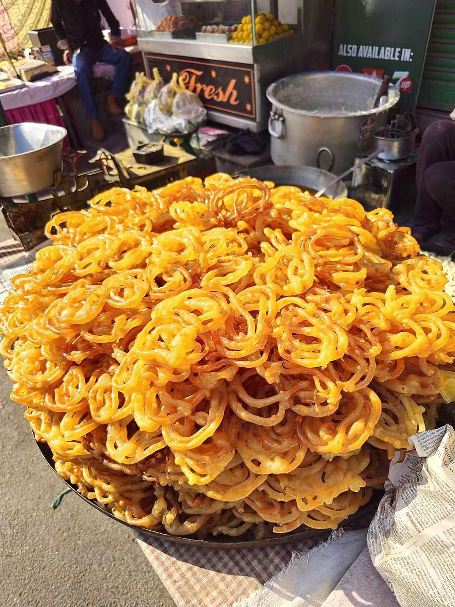

Start the day before. The resting alone is 12 hr, against 50 min of actual work.
Contains: milk, gluten
Ingredients
Quantities for 6.
- 200g Maida
- 2 tbsp Besanoptional
- 3 tbsp Yogurtstarts the ferment
- 400g Sugar
- a good pinch Saffron
- 4, crushed Cardamom
- 1/2 Lemonkeeps the syrup from crystallising
- 600ml Gheefor deep frying
- a pinch Saltoptional
Cookware
stovetop, kadhai
Checked against the ingredient list for ten allergens: milk, egg, fish, crustaceans, tree nuts, peanuts, sesame, mustard, soy and gluten. Brands vary, so read the label on anything new to you.
Before you start
- The batter must ferment. Twelve hours in a warm place gives jalebi its sourness and the bubbles that make it crisp.
- Syrup warm, ghee hot, jalebi crisp. Get any of those three wrong and it goes limp.
Method
- Whisk the maida, besan and yogurt with water into a thick, smooth batter, cover, and leave 12 hours in a warm place.It should smell faintly sour and show bubbles. That is the ferment working.
- Make a one-string syrup with the sugar, 250ml water, saffron, cardamom and lemon juice. Keep it warm, not hot.
- Whisk the fermented batter hard for a minute to knock it back to a piping consistency.
- Fill a piping bag or a squeeze bottle and pipe spirals directly into ghee at 180C.Start at the centre and work outward, two or three turns.
- Fry 1 minute a side until crisp and pale gold, not brown.
- Lift straight into the warm syrup for 30 seconds only, then out onto a rack.Thirty seconds. Longer and the jalebi goes soft.
- Serve immediately, ideally with rabri.
Storage
Best within an hour. Jalebi loses its crispness quickly and cannot be revived. The syrup keeps a week.
Nutrition Low estimate
Low protein: 5 g a serving, 4% of the calories
| Per serving127 g | Per 100 g | |
|---|---|---|
| Calories | 523 kcal | 413 kcal |
| Protein | 4.9 g | 4 g |
| Carbohydrate | 95.4 g | 75 g |
| of which sugars | 67.5 g | 53 g |
| Fibre | 1.4 g | 1 g |
| Fat | 14.5 g | 11 g |
| of which saturated | 8.7 g | 7 g |
| of which unsaturated | 4.9 g | 4 g |
Syrup left in the bowl, or batter that yields more than the stated servings, means the real figures are likely lower. Estimated from raw ingredients using USDA FoodData Central.
More like this: Vegetarian Indian recipes · No onion no garlic recipes · Punjabi recipes
Times, yields, allergens and nutrition are guidance. Use your own judgement on doneness and on storing. More in About.